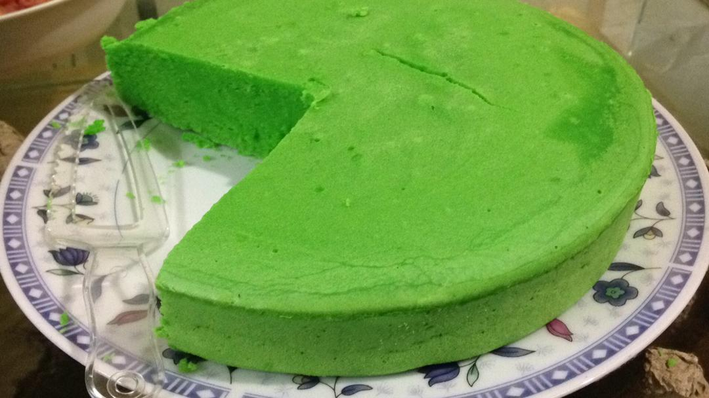

My First Activity During MCO

Description : Kek Pandan
My first activity during MCO is helping my mother to bake a cake. The ingredients that we need to bake this cake are flour, eggs, sugar,pandan paste, magerine and baking powder. After all these ingredients are ready, then we start to mix them in a bowl. The processes are continuing until the ingredients are well mixed. Finally, bake the cake in an oven for about 40 minutes. When the cake is cooked, leaves it for a few minutes before it can be served.
Description : Final Product


For final product, you can put any design that you want for example, me and my mother put some sweet colouring for the cake topping.Finally, after designing the cake, it ready to be serve.